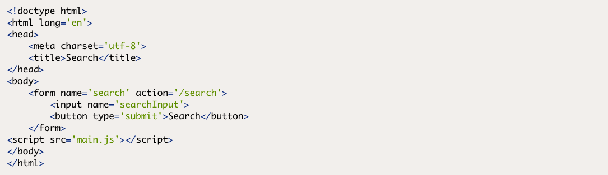
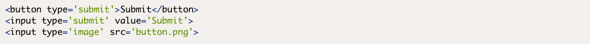
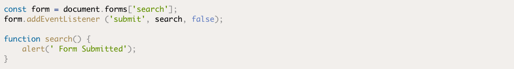
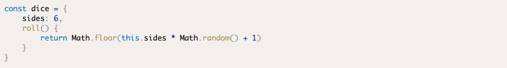

Readings
Forms
Forms are made up of a "form" element that contains form controls such as input fields, select menus and buttons. These input fields can be populated with information that is processed once the form has been submitted.
Form objects have a number of useful properties and methods that can be used to interact with the form.
The form.submit() method will submit the form automatically. Note that submitting a form using this method won’t trigger the form submit event that's covered in the next section
The focus event occurs when an element is focused on. In the case of an element, this is when the cursor is placed inside the element (either by clicking or tapping on it or navigating to it using the keyboard).
Possibly the most important form event is the submit event, occurring when the form is submitted. Usually this will send the content of the form to the server to be processed, but we can use JavaScript to intercept the form before it’s sent by adding a submit event listener.
Object Oriented Programming
Object-oriented programming is often used to model representations of objects in the real world. There are three main concepts in OOP: encapsulation, polymorphism and inheritance.
Encapsulation
This involves keeping all the programming logic inside an object and making methods available to implement the functionality, without the outside world needing to knowhowit’s done.
Polymorphism
In OOP, this means various objects can share the same method, but also have the ability to override shared methods with a more specific implementation.
Inheritance
In OOP, this means we can take an object that already exists and inherit all its properties and methods. We can then improve on its functionality by adding new properties and methods.
Classes
Many object-oriented languages, such as Java and Ruby, are known asclass-basedlanguages. This is because they use a class to define a blueprint for an object. Objects are then created as an instance of that class, and inherit all the properties and methods of the class.
JavaScript didn't have classes before ES6, and used the concept of using actual objects as the blueprint for creating more objects. This is known as aprototype-basedlanguage. Even though ES6 now supports classes, it still uses this prototypal inheritance model in the background.
Modular JavaScript
A module is a self-contained piece of code that provides functions and methods that can then be used in other files and by other modules. This helps to keep code organized in separate, reusable files, which improves code maintainability. The code in a module should have a single purpose, and group together functions with distinct functionality. For example, you might keep any functions used for Ajax in their own module. This could then be used in any projects where Ajax was required. Keeping code modular helps to make it moreloosely coupledand interchangeable, meaning you can easily swap one module for another without affecting other parts of a project. Indeed, small single-purpose modules are the exact opposite of large monolithic libraries as they enable developers to use only the modules that are needed, avoiding any wasted code. Modules also allow a public API to be exposed, while keeping the implementation hidden away inside the module.